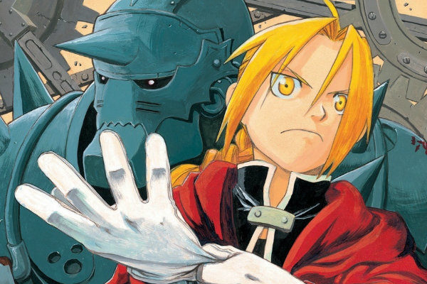

"E não nos cansemos de fazer o bem, pois no tempo próprio colheremos, se não desanimarmos."
(Gálatas 6:9)
MÚSICA FAVORITA
ANIME FAVORITO
Sinopse: Os irmãos Edward e Alphonse usam a alquimia para ressuscitar a mãe deles, mas provocam uma reação química que acaba destruindo seus corpos.
ALGUNS VÍDEOS MOSTRANDO JOGADAS NO LEAGUE OF LEGENDS
League of Legends é um jogo eletrônico do gênero multiplayer online battle arena, desenvolvido e publicado pela Riot Games para Microsoft Windows e Mac OS X. É um jogo gratuito para jogar e inspirado no modo Defense of the Ancients de Warcraft III: The Frozen Throne.
Dê Cellis "Dedê" Vieira Barreto
Graduanda em ADS.
Ama jogos, animes, design gráfico e gatos. Boatos correm pelos cantos medievais dizendo que ela cria magas poderosíssimas em MMORPG's e que sempre arruma um jeito sábio de solar o boss.